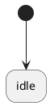

- Generated by
 1.13.2
1.13.2
|
Maki
|
The initial pseudostate represents the starting point of a region; it indicates the state that is entered by default whenever a state machine starts or whenever a composite state is entered.
It is represented by a full circle. In the example below, it indicates that the idle state is active by default.

The initial pseudostate must obey these rules:
In transition tables, the initial pseudostate is represented by the maki::init object. It must be the source state of the first transition of the table and cannot be used elsewhere.
maki::init is mandatory.